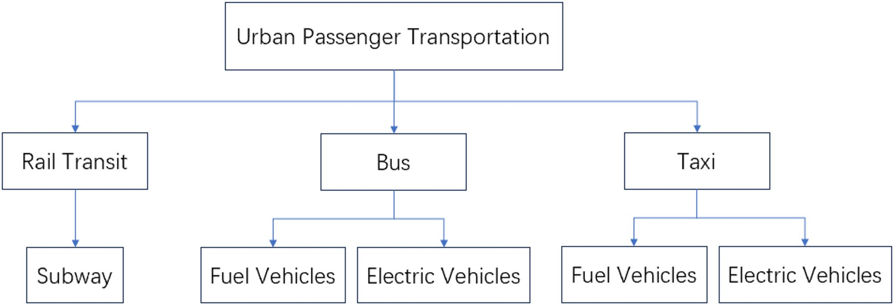
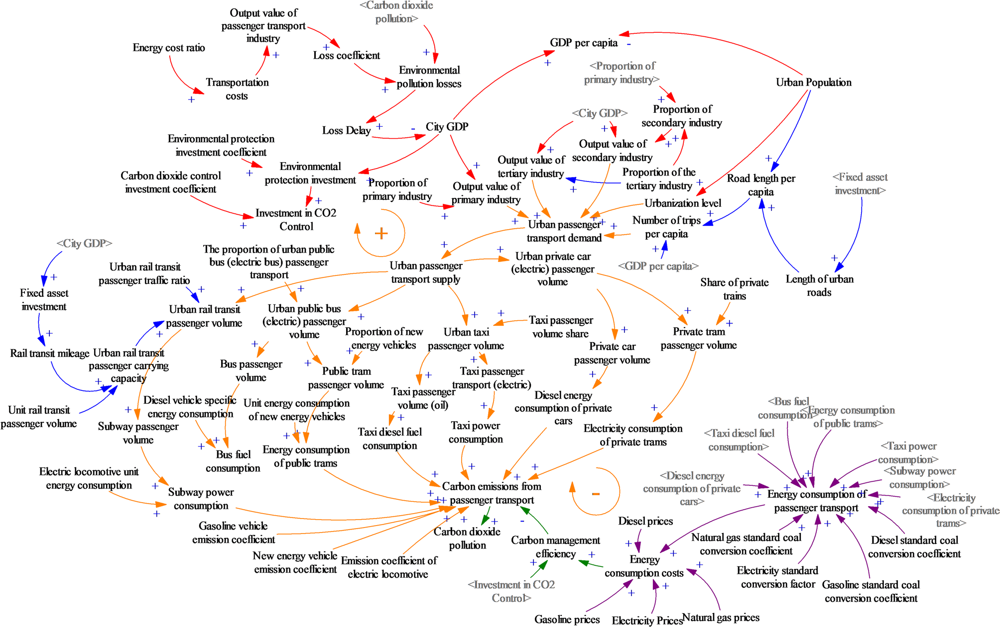
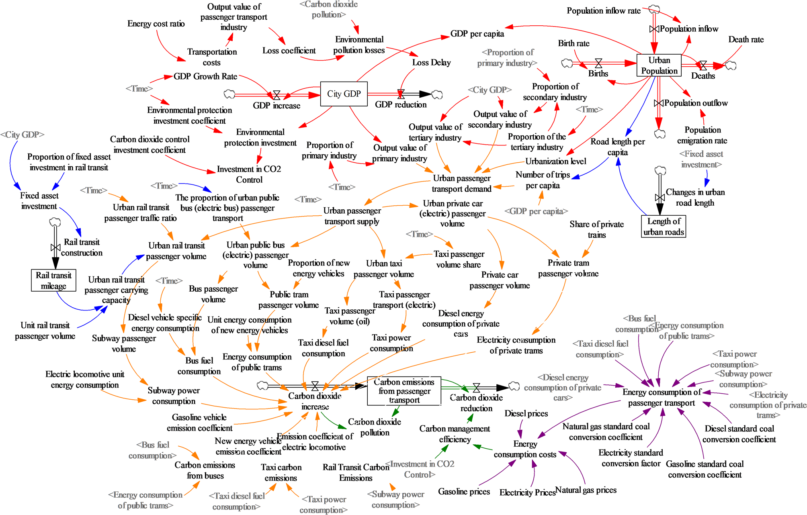
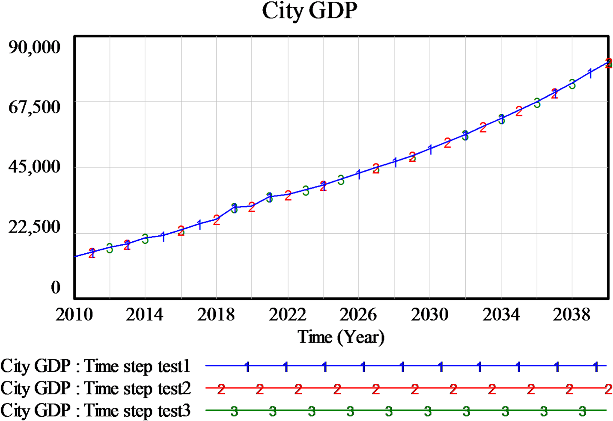
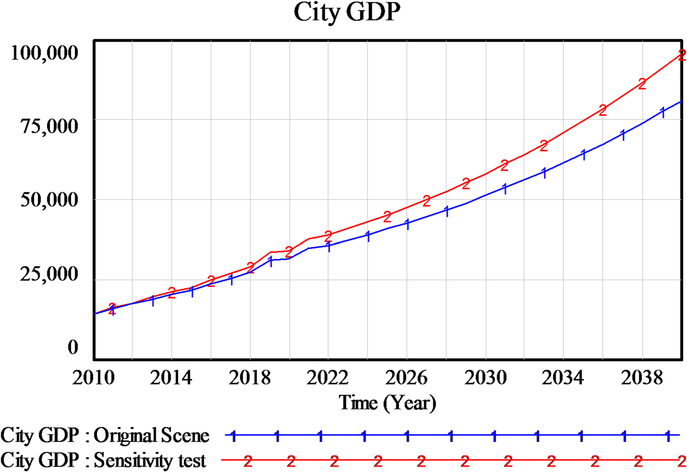
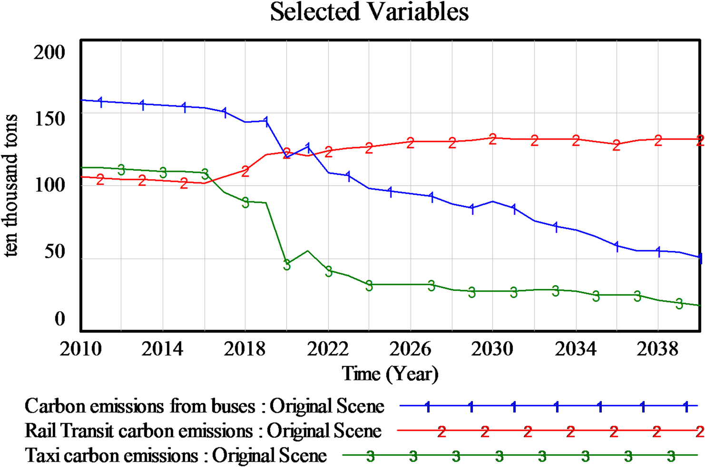
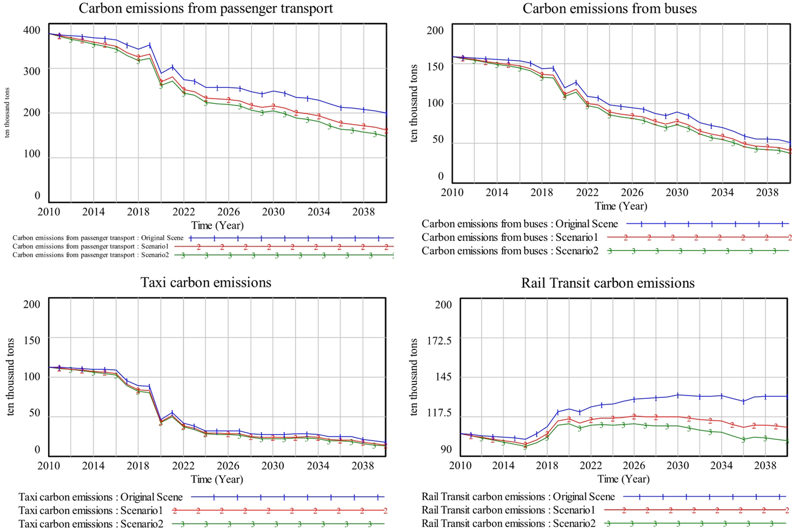

MODELOS Y SIMULACIÓN · UNAL
Cita APA 7: Liu, R., & Liu, N. (2025). Study on urban passenger transport carbon reduction pathways based on system dynamics. Scientific Reports, 15(1), Article 37471. https://doi.org/10.1038/s41598-025-21386-8
Curso: Modelos y Simulación (2025970-G4)
Docente: Angela María Arboleda Restrepo
Equipo: Samuel Herrera · Katherinne Olaya · Fredy Garcia · Ever Muñoz
Presentación interactiva · despliegue en GitHub Pages
Abrir presentación webEl transporte urbano de pasajeros concentra presión sobre los objetivos de Carbon Peak (2030) y Carbon Neutrality (2060) en China.
Resumen del problema resuelto por Liu & Liu (2025): descarbonizar el transporte de pasajeros en Pekín mediante simulación de escenarios de política.
Simulación integrada de población y economía, consumo energético, infraestructura vial urbana, operación del tráfico y control de emisiones de carbono (2010–2040).
Evaluar trayectorias de reducción de emisiones del transporte de pasajeros en Pekín bajo escenarios de política simple y dual.

Sterman (2000), Cap. 4: el comportamiento emerge de la estructura — 5 stocks · 10 flows · 32 auxiliares · 19 constantes (Table 1, Liu & Liu, 2025).
Origen, naturaleza y relevancia de los datos para parametrizar el modelo DS (Pekín, calibración 2010–2024).
14114.3, población 2154, vías 153465 → condiciones INTEG(...) del Yearbook.Limitaciones críticas: calibración empírica hasta 2024; la proyección 2025–2040 extrapola la estructura calibrada; constantes fijas en escenario base (sin shocks externos, sup. 1–2).
Tres arquetipos estructurales (R/B) que comparten PIB, demanda y emisiones — el artículo identifica 15 bucles en total (fig. 2).

0 eslabones (−) → bucle de refuerzo. El cierre es económico, no vía emisiones.
1 eslabón (−) → frena el crecimiento con retraso de 2 años en el impacto económico.
1 eslabón (−) → autorregulación del stock de carbono (fig. 5).
Liu & Liu (2025) identifican 15 bucles; aquí se sintetizan 3 arquetipos del CLD. El bucle modal extendido (Loops 1–3) comparte el tronco: Emisiones (+) → CO₂ (+) → Pérdidas (+) → Loss Delay (+) → PIB (−) → Demanda (+) → Oferta (+) → [rama por modo] → Consumo energético del modo (+) → Emisiones (+). La rama cambia según el modo: taxi eléctrico, trolebús o metro (vía inversión fija y kilometraje). Sterman (2000), Cap. 4: estructura → comportamiento.
Variables de estado (Stocks), flujos (Flows), auxiliares y constantes — Table 1: 5 · 10 · 32 · 19.
| Variable | Tipo | Rol |
|---|---|---|
| Urban GDP (PIB urbano) | Stock | Acumulación económica |
| Urban Population | Stock | Demografía urbana |
| Urban Road Length | Stock | Infraestructura vial |
| Passenger Transport Carbon Emissions | Stock | Emisiones acumuladas CO₂ |
| Rail Transit Mileage | Stock | Red de metro |
| GDP Increase / GDP Decrease | Flow | Tasas de cambio del PIB |
| Births / Deaths / Migration | Flow | Flujos demográficos |
| CO₂ Increase / CO₂ Reduction | Flow | Entrada y salida de carbono |
| Rail Transit Construction | Flow | Expansión de metro |
| Change in Urban Road Length | Flow | Expansión vial |
| Urban Passenger Transport Demand | Auxiliar | Driver de oferta modal |
| Energy Consumption Cost | Auxiliar | Costo energético agregado |
| Carbon Management Efficiency | Auxiliar | Eficiencia de mitigación |
| Environmental Pollution Loss | Auxiliar | Pérdida económica por contaminación |
| Loss Delay | Auxiliar | Retraso de impacto económico |
| Birth / Death / Migration rates | Constante | 0.0016 · 0.0032 · 0.0001 |
| Fuel prices (diesel, gas, electricity) | Constante | Mecanismo de costos |
| Emission coefficients (NEV, gasoline, electric) | Constante | Intensidad de carbono |
| Standard coal conversion factors | Constante | Homogenización energética |

Tabla representativa (no exhaustiva): el modelo completo tiene 66 variables en Table 1 de Liu & Liu (2025). Se omiten filas por legibilidad en la exposición.
V del V&V (Sterman, 2000): comprobar que el modelo está bien construido — estructura, unidades y estabilidad numérica — antes de contrastarlo con datos reales.
Verificación ≠ validación: aquí se evalúa la corrección interna del modelo; la comparación con datos históricos corresponde a la validación (diap. 8–9).

V del V&V (Sterman, 2000): evaluar si el modelo reproduce comportamientos de referencia y responde de forma plausible ante variaciones en parámetros clave.
Los autores aplican verificación estructural (diap. 7) y validación conductual/histórica bajo el marco formal de Sterman (2000).

Reproducción de comportamiento histórico (Sterman, 2000) — simulado vs. observado, error < 5 %.
Real vs. simulado · clic (izq. o der.) o . para ampliar
Error de ajuste (%) · Table 2 · clic (izq. o der.) o . avanza
Serie real Serie simulada Error %
Gráficas elaboradas a partir de Table 2 (Liu & Liu, 2025).
Real vs. simulado · clic (izq. o der.) o . para ampliar
Error de ajuste (%) · Table 3 · clic (izq. o der.) o . avanza
Serie real Serie simulada Error %
Gráficas elaboradas a partir de Table 3 (Liu & Liu, 2025).
Validación histórica (Tables 2–3): el modelo replica la tendencia de crecimiento del PIB urbano y la trayectoria del volumen de metro (incluida la caída 2020–2022), con error < 5 % en todos los años — base para proyecciones 2025–2040.
Comportamientos emergentes (Sterman, 2000, Cap. 4) — escenario base y políticas (figs. 11–15).


| Comportamiento | Gráfica(s) | Modo / variable | Explicación (Liu & Liu, 2025) |
|---|---|---|---|
| Crecimiento Sigmoideo | Fig. 11 «2»; fig. 15 inf. der.; figs. 12–13–14 | Tránsito ferroviario | Alza gradual hasta meseta: expansión de demanda, población y kilometraje ferroviario; punto de inflexión hacia operación baja en carbono. |
| Goal-seeking | Fig. 11 «1»; fig. 15 sup. der.; figs. 12–13–14 | Buses | Declive sostenido tras ~2018: adopción de NEV, buses eléctricos, mejoras de eficiencia energética y gobernanza del carbono. |
| Goal-seeking | Fig. 15 sup. izq.; figs. 12–13–14 | Total pasajeros (todos los modos) | Emisiones agregadas del transporte de pasajeros en descenso; refleja la suma de la transición estructural de todos los modos. |
| Overshoot & collapse | Fig. 11 «3»; fig. 15 inf. izq.; figs. 12–13–14 | Taxis | Caída abrupta 2018–2020 y estabilización baja: salida de taxis a combustión fósil del dominio inicial del sistema. |
| Oscilaciones | — | — | Ninguna gráfica muestra ciclos endógenos sostenidos; solo tendencias estructurales (subidas, caídas o mesetas), no oscilaciones periódicas del modelo. |
Figs. 12–13–14: políticas individuales de transporte público, tecnología energética y comportamiento de viaje. Fig. 15: mismas dinámicas bajo combinaciones duales (Original / Esc. 1 / Esc. 2).
Tres categorías de escenarios (Liu & Liu, 2025), respuesta no lineal del sistema y sinergia superior a intervenciones aisladas.
Expansión del kilometraje de metro urbano para desplazar viajes de menor eficiencia y reducir emisiones agregadas.
Mejora de la eficiencia energética de vehículos de nueva energía (NEV), reduciendo consumo unitario y CO₂ por viaje.
Restricción del uso de autos privados y fomento de modos de menor carbono (bus, metro, taxi eficiente).
| Categoría | Palanca | Esc. 1 | Esc. 2 | ↓ Esc. 1 | ↓ Esc. 2 |
|---|---|---|---|---|---|
| Transporte público | Kilometraje metro | +5 % | +10 % | −7.23 % | −9.18 % |
| Tecnología energética | Consumo unitario NEV | −5 % | −10 % | −7.97 % | −9.53 % |
| Comportamiento de viaje | Autos privados | −5 % | −10 % | −8.13 % | −9.88 % |
| Combinación dual | ↓ Emisiones | ||||
| Transporte público + Tecnología energética | 11.32 % | ||||
| Transporte público + Comportamiento de viaje | 10.58 % | ||||
| Tecnología energética + Comportamiento de viaje | 8.94 % | ||||
Intensidades de escenario: Tables 4-5–6 · Resultados de reducción (%): sección de escenarios de política y fig. 15 (las combinaciones duales no tienen tabla propia en el paper). Reducción respecto al escenario base.
Síntesis del trabajo, contribuciones del equipo, referencias APA 7 y declaración de uso de IA.
| Miembro | Rol | Actividades / contribuciones |
|---|---|---|
| Samuel Herrera | Datos y políticas | Conjunto de datos y efectos contraintuitivos |
| Katherinne Olaya | Redacción y coordinación | Cita del artículo, descripción del problema, aprendizajes y contribuciones del equipo |
| Fredy Garcia | Validación y resultados | Validación del modelo (Sterman) y resultados de simulación |
| Ever Muñoz | Modelado DS | Modelo DS, diagrama de ciclos causales y diagramas de Forrester |
En la preparación de este entregable se utilizó Claude (Anthropic) para la estructuración de las diapositivas en código HTML/CSS, y Gemini (Google) para la redacción y validación de ideas. El equipo revisó, editó y validó íntegramente todo el contenido para garantizar su precisión, coherencia técnica e integridad académica, sin presentar información errónea ni material no verificado.
Referencias (APA 7):
Liu, R., & Liu, N. (2025). Study on urban passenger transport carbon reduction pathways based on system dynamics. Scientific Reports, 15(1), Article 37471. https://doi.org/10.1038/s41598-025-21386-8
Sterman, J. D. (2000). Business dynamics: Systems thinking and modeling for a complex world. Irwin/McGraw-Hill.